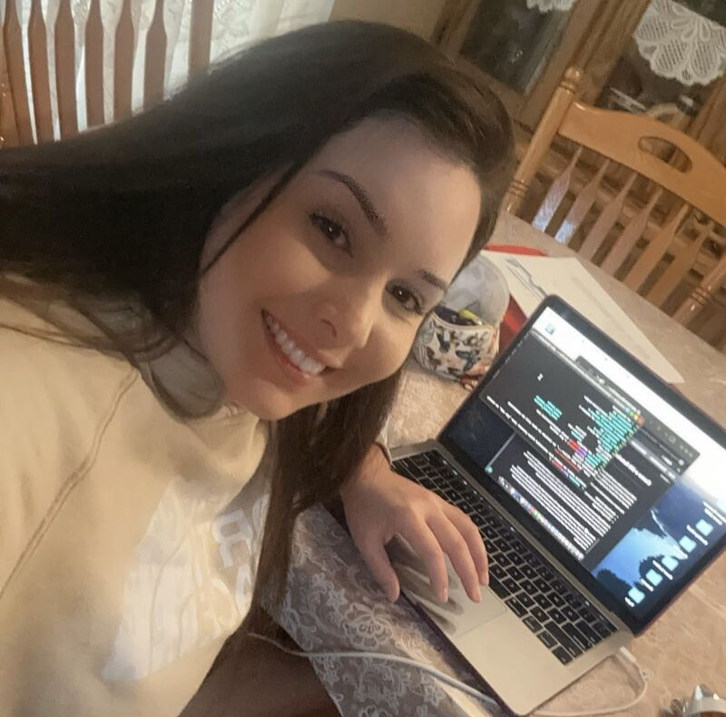

Meu nome é Laine Hernandez, na foto abaixo eu estou com meu terminal aberto no laptop em meu segundo dia de aulas na Trybe. Naquele dia, eu aprendi como abixar a extensão 🧛🏻♂️ Dracula- Eu amo ver cores e imagens em todos os lugares, entao essa extensão é perfeita!
Eu tenho 27 anos, sou brasileira e casada com o mexicano mais charmoso desse mundo, nós temos uma bebezinha americana e ela tem dez meses de idade. Nós moramos em Great Bend, Kansas, Estados Unidos. Eu vim para os Estados Unidos em Julho de 2017 para jogar volei em Barton Community College, conheci o meu marido, e decidimos construir a nossa família aqui nessa cidade que nós consideramos segura e com boa qualidade de vida. Sou formada em Gestão de Empresas, e comecei minha jornada em tecnologia em Outubro de 2023.